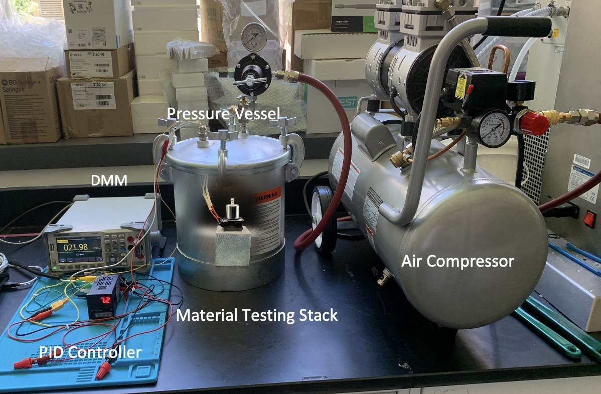

MIT Lab for Translational Engineering · Mar–Jun 2026
High-pressure thermal characterization apparatus
Designed and built a pressure-vessel test rig from scratch to compare insulation materials under simulated depth. Integrated a PID-controlled heating element, digital multimeter logging, and electrical feedthroughs that hold seal under pressurization, then established the standardized protocol for pressurization, thermal conditioning, and cool-down measurement. Used the rig to benchmark experimental insulation materials against the current industry standard, and trained other lab members to operate the apparatus independently.
- 104 fsw equivalent